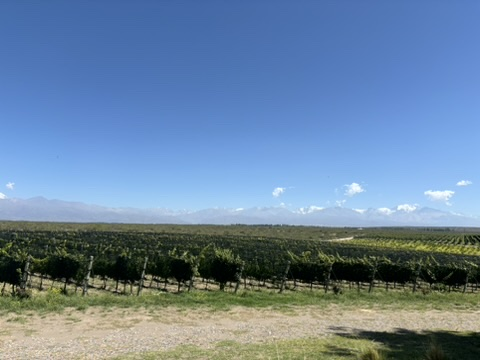
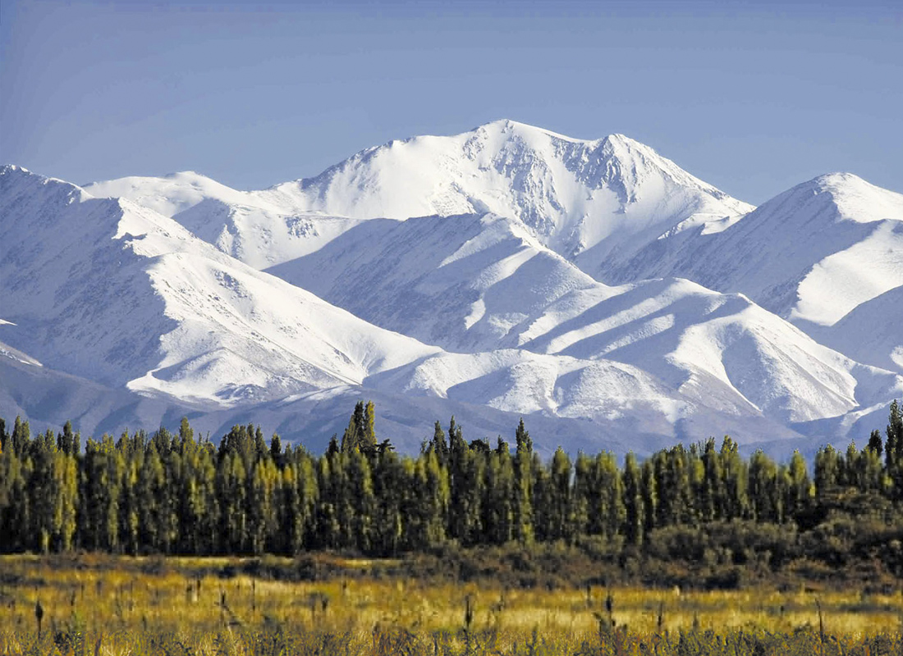
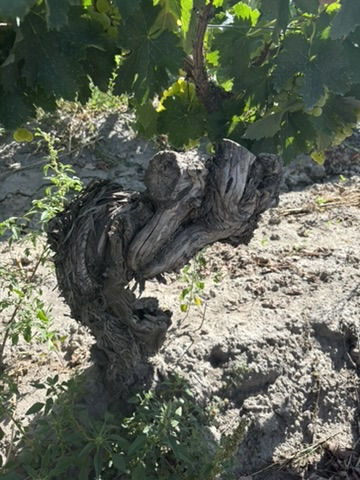

<!DOCTYPE html>
<html lang="es">
<head>
    <meta charset="UTF-8">
    <meta name="viewport" content="width=device-width, initial-scale=1.0">
    <!-- <link rel="stylesheet" href="../css/style.css"> -->
    <link rel="stylesheet" href="../css/estilos.css">
    <title>Escala Humana | Bodega y Vino de Mendoza/title>
    <link href="https://cdn.jsdelivr.net/npm/bootstrap@5.2.3/dist/css/bootstrap.min.css" rel="stylesheet" integrity="sha384-rbsA2VBKQhggwzxH7pPCaAqO46MgnOM80zW1RWuH61DGLwZJEdK2Kadq2F9CUG65" crossorigin="anonymous">
    <link rel="shortcut icon" href="../img/favicon_io/favicon.ico" type="image/x-icon">
    <meta name="description" content="Sumérgete en la excelencia vinícola de Mendoza con nosotros. Descubre la pasión detrás de nuestros vinos de renombre mundial, elaborados con el carácter único de nuestra región.">
    <meta name="keywords" content="Vinos de Mendoza, Bodega, Viñedos, Degustación, Turismo enológico, Malbec, Tradición vitivinícola, Experiencia, Cultura del vino, Enoturismo, Cata de vinos, Boutique, Terroir, Historia vinícola, Sostenibilidad, Cabernet, Malvasia, Tienda Online, Tienda de vinos, Vinoteca, Escala Humana, Credo">
    <meta property="og-type" content="E-Commerce">
    <meta property="og-title" content="Escala Humana | Bodega y Vino de Mendoza">
    <!-- <meta property="og-url" content="">
    <meta property="og-image" content=""> -->
    <meta property="og-description" content="Sumérgete en la excelencia vinícola de Mendoza con nosotros. Descubre la pasión detrás de nuestros vinos de renombre mundial, elaborados con el carácter único de nuestra región.">
</head>
<body>
    <header>
        <div> 
            <a href="../index.html">
                
            </a>
        </div>
        <div> 
            <h1> Escala Humana </h1>
        </div>
    </header>
    <nav class="navbar navbar-expand-lg bg-dark">
        <div class="container-fluid">
                <button class="navbar-toggler" type="button" data-bs-toggle="collapse" data-bs-target="#navbarNavAltMarkup" aria-controls="navbarNavAltMarkup" aria-expanded="false" aria-label="Toggle navigation">
                <span class="navbar-toggler-icon"></span>
                </button>
            <div class="collapse navbar-collapse" id="navbarNavAltMarkup">
                <div class="navbar-nav">
                    <a class="nav-link" href="../index.html">Home</a>
                    <a class="nav-link" href="../pages/nosotros.html">Nosotros</a>
                    <a class="nav-link" href="../pages/terroir.html">Terroir</a>
                    <a class="nav-link" href="../pages/tienda.html">Tienda</a>
                    <a class="nav-link" href="../pages/contacto.html">Contacto</a>
                    <a class="nav-link" href="../pages/galeria.html">Galeria</a>
                </div>
            </div>
        </div>
    </nav>
    <main> 
        <section class="terroir1">
            <div>
                
            </div>
            <div>
                <h2> Valle de Uco </h2>
                <p> El Valle de Uco, enclavado en la prestigiosa región vinícola de Mendoza, Argentina, es un terroir de incomparable belleza y diversidad. Sus suelos pedregosos y aluviales, su clima continental moderado por la altitud y la influencia fresca de los vientos provenientes de la Cordillera de los Andes, y su generosa exposición al sol, crean las condiciones perfectas para el cultivo de uvas de calidad excepcional. Este mágico valle, conocido por sus amplitudes térmicas y su escasez de lluvias, otorga a sus vinos una expresión única, marcada por la frescura, la intensidad aromática y la estructura. Desde las laderas montañosas hasta los suelos aluviales de los fondos de valle, cada rincón del Valle de Uco cuenta una historia enológica fascinante, reflejando la diversidad del paisaje y la pasión de quienes trabajan la tierra con dedicación y respeto.</p>
            </div>
        </section>
        <section class="terroir2">
            <div>
                
            </div>
            <div>
                <h2> Tupungato </h2>
                <p> Tupungato, majestuosa y serena, se alza como el corazón palpitante del Valle de Uco en la provincia de Mendoza, Argentina. Rodeada por la imponente belleza de la Cordillera de los Andes, esta región vitivinícola ofrece un escenario impresionante para la producción de vinos de clase mundial. Sus suelos pobres y pedregosos, combinados con un clima continental con marcadas amplitudes térmicas, crean condiciones óptimas para el cultivo de uvas de alta calidad. Aquí, en las faldas del imponente volcán Tupungato, las viñas se aferran tenazmente a la tierra, alimentándose de la pureza de los arroyos de deshielo que descienden de las alturas. Los vinos de Tupungato reflejan la esencia misma de su entorno: frescos, vibrantes y llenos de carácter, cada sorbo es un tributo a la grandeza natural y a la dedicación de los viticultores que labran estas tierras con pasión y respeto.
                </p>
            </div>
        </section>
        <section class="terroir3">
            <div>
                
            </div>
            <div>
                <h2> El Zampal </h2>
                <p> El Zámpal, situado en la prestigiosa región vinícola de Tupungato, dentro del Valle de Uco en Mendoza, Argentina, es un terroir de singular belleza y carácter distintivo. Este enclave vitivinícola se destaca por su suelo franco-arenoso, rico en calcio y minerales, combinado con una altitud considerable que alcanza los 1.200 metros sobre el nivel del mar. Estas características, junto con la influencia del clima continental y las brisas frescas que descienden de los Andes, proporcionan un entorno ideal para el cultivo de uvas de calidad excepcional. En este rincón privilegiado, la variedad de Malbec encuentra su expresión más auténtica, mostrando una notable concentración de sabores y una elegancia estructural única. Los vinos producidos en El Zámpal capturan la esencia misma de su terroir: profundamente arraigados en la tierra, con una frescura vibrante y una complejidad que revela el alma del paisaje que los engendra.
                </p>
            </div>
        </section>
    </main>
    <div class="seguidorwht">
        <a href="https://wa.me/5491122973756"target="blank">
            
        </a>
    </div>
    <footer> 
        <div class="footer1">
            <div class="logofooter">
                <!--LOGO-->
                <a href="../index.html">
                    
                </a>
            </div>
            <div>
            <!--Lista 1-->
                <ul class="lista1">
                    <div>
                        <li><a href="../pages/nosotros.html">Nosotros</a> </li>
                        <li><a href="../pages/terroir.html">Terroir</a> </li>
                    </div>
                    <div>
                        <li><a href="../pages/tienda.html">Tienda</a> </li>
                        <li><a href="../pages/contacto.html">Contacto</a> </li>
                    </div>
                </ul>
            </div>
            <div>
            <!--Lista 2-->
                <ul class="listafoot2">
                    <div>
                        <li><a href="https://www.linkedin.com/"target="blank">Unite</a> </li>
                        <li><a href="../pages/faqmdpenv.html">Cómo Pago</a> </li>
                    </div>
                    <div>
                        <li><a href="../pages/faqmdpenv.html">FAQ</a> </li>
                        <li><a href="../pages/faqmdpenv.html">Envios</a> </li>
                    </div>
                </ul>
            </div>
        </div>
        <div class="redesfooter">
            <!--Redes-->
            <a href="https://wa.me/5491122973756"target="blank">
                
            </a>
            <a href="https://www.instagram.com/escalahumanawines/"target="blank">
                
            </a>
            <a href="https://www.linkedin.com/"target="blank">
                
            </a>
        </div>
    </footer>
    <script src="https://cdn.jsdelivr.net/npm/bootstrap@5.2.3/dist/js/bootstrap.bundle.min.js" integrity="sha384-kenU1KFdBIe4zVF0s0G1M5b4hcpxyD9F7jL+jjXkk+Q2h455rYXK/7HAuoJl+0I4" crossorigin="anonymous"></script>
</body>
</html>


